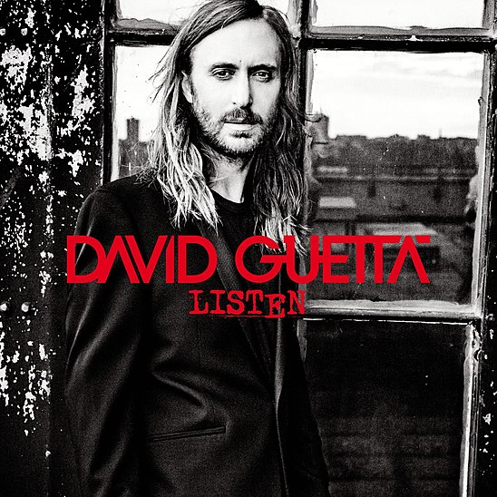

best car music hits
Weekend - NATAN Remix
LIZOT, NATAN
Listen
Family Affair
Mary J. Blige
Listen
Cold Heart
Elton John
Listen
In Da Club
50 Cent & Ol
Listen
Infinity
Jaymes You
Listen
Зорі
KALUSH(UA)
Listen
Beggin
maneskin
Listen
List of songs
LIZOT, NATAN
- NATAN Remix
Mary J. Blige
- Family Affair
Elton John
- Cold Heart
50 Cent & Ol
- In Da Club
Jaymes You
- Infinity

KALUSH(UA)
- Зорі
maneskin
- Beggin